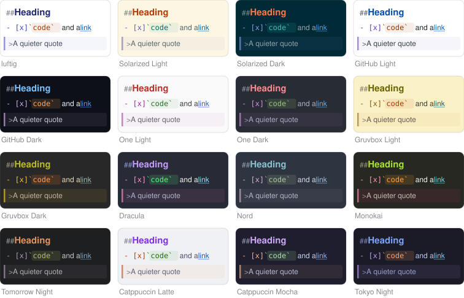

A small, fast Markdown editor for the Mac
luftig is a native app for writing and thinking in plain text, alone or with an AI that edits the same file. One text view, no preview: the Markdown source is what you edit, styled in place.
Download luftigor with Homebrew: brew install bernorieder/luftig/luftig
Free and open source · macOS 14 or later · Mac with Apple silicon


Click to enlarge.
What it does
- Fast and tiny: pure AppKit and Swift, no web view, no dependencies, a 1.4 MB executable. A 20 MB file is on screen, styled, in about 30 ms.
- Working with an AI on the same files: when another program, such as an agent, a build tool or
git, changes an open file, the new text appears within about 50 ms, keeping your selection and scroll position. Your unsaved edits are merged in when the changes don't overlap, and a banner asks when they do. You choose: reload automatically, ask first, or never reload. - No preview, just text: the file is the document. Headings are bigger, code blocks and quotes are marked, emphasis looks emphasised, and the syntax characters are dimmed but stay visible and editable. CommonMark and GFM, with tables, task lists, footnotes and YAML front matter.
- Writing help: Return continues a list or a quote, Tab and Shift-Tab nest list items, the Format menu has a shortcut for every element, ⌘-click follows a link, and Typewriter Mode keeps the line you write on in the middle of the window.
- Tables that line up: the columns of a table are aligned on screen while you type, without adding a single space to the file. Format → Align Table pads the table in the file too, for diffs, other editors and agents.
- Panels around the text: an outline of the headings, a word count and reading time, and a syntax bar that inserts Markdown with a click, all plain text in the scheme's dim colour. Each can be switched off.
- Your look: fonts and sizes for text, code and the panels, line spacing, column width and padding.
- Colour schemes: 16 built in, any Base16 scheme from a file, or your own from seven colour pickers.
- Leaving the editor: Copy as HTML or Rich Text, and Export as HTML, Rich Text or PDF.

Full screenshots of every scheme: lists and quotes, code and tables.


luftig has no preview, no sync of its own and no plugins, and it runs only on the Mac. The README on GitHub lists everything it does and doesn't do, and the manual has every shortcut and setting.
How luftig handles your files
luftig opens, shows and saves the files you choose, and watches the open ones for changes made by other programs. That is all it does with them.
- No network. luftig has no account, no server and no network connection of its own. The only time it touches the network is when you click a link, which opens in your browser.
- Your files stay as they are. The character encoding and line endings a file came with are written back unchanged, and nothing is ever written over a version of the file you haven't seen.
- Nothing else. No analytics, no crash reports, no ads, no tracking.
- Stored only on your Mac. Your settings and any imported or custom colour schemes are kept in your user folder.
The privacy policy has the details.
Installation
- Download
luftig-<version>.dmgfrom the latest release. - Open it and drag luftig into your Applications folder. The app is signed and notarized, so macOS opens it without a warning.
- Open a Markdown file with luftig, or open luftig and choose File → New.
With Homebrew, instead of the first two steps, run this in Terminal:
brew install bernorieder/luftig/luftigTo make luftig the default app for .md files, select one in the Finder, choose File → Get Info, pick luftig under Open with and click Change All. To update, download the new version and drag it into Applications, replacing the old one, or run brew upgrade luftig. Your settings are kept.